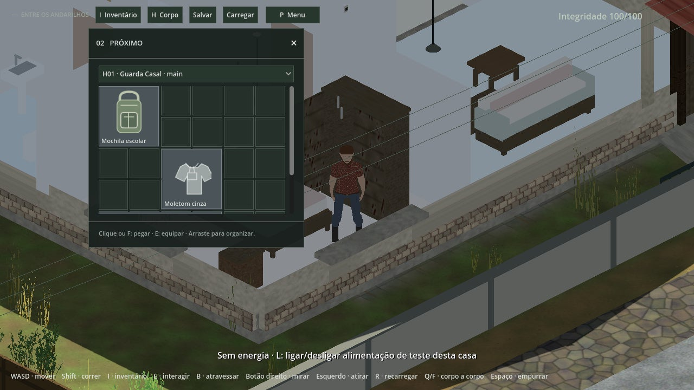
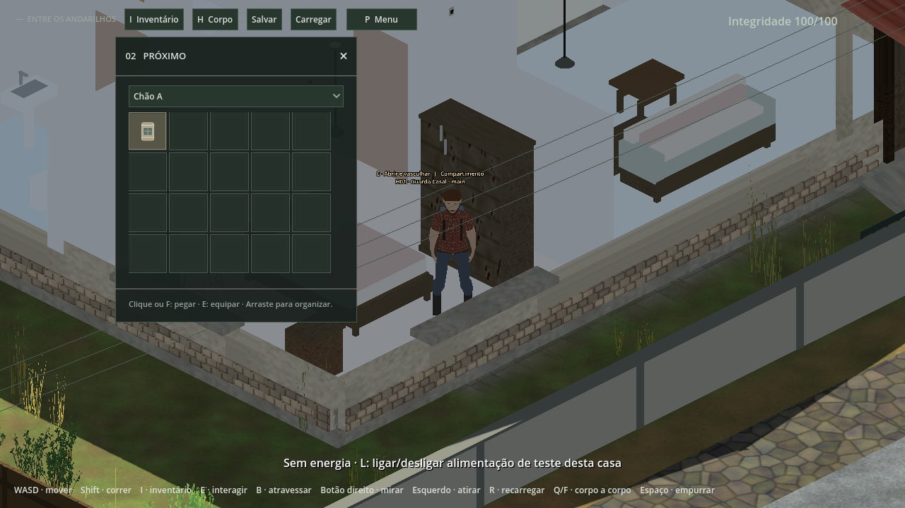

Entrada e saída da H01 verificadas; HUD do armário e do chão corrigidos. Portas de H02, H10 e H40 testadas, além de salvar/carregar.
O mapa inteiro ainda não está homologado. Há 40 casas e 590 recipientes registrados, mas as sete janelas controladas continuam restritas à H01. Falta integrar as demais janelas e validar os acessos por imóvel.
Relatório completo · 13 verificações aprovadas · Caminhada pela entrada

